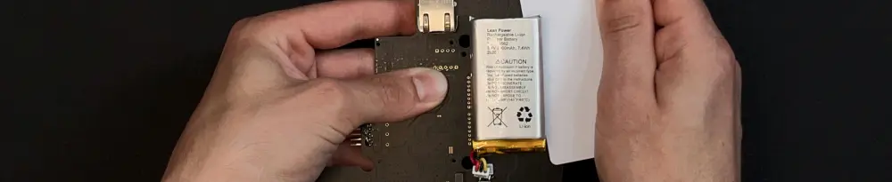

Hack Sederhana: Cara Aman Pasang Baterai pada Portable Bluetooth Speaker DIY
Dipublikasikan pada 27 Oktober 2025

Siapa di sini yang suka melakukan eksperimen atau DIY (Do It Yourself) di bidang elektronika? Merakit perangkat sendiri memang seru, dan membuat portable bluetooth speaker adalah salah satu proyek yang sangat populer. Hasilnya pun praktis digunakan sehari-hari, baik untuk mendengarkan musik di rumah, camping, atau menemani saat bersantai.
Hal penting dalam membuat portable bluetooth speaker adalah menyeimbangkan kualitas suara dan daya tahan baterai. Karena speaker jenis ini mengandalkan baterai sebagai sumber tenaga utama, pemilihan dan pemasangan baterai yang tepat sangat berpengaruh pada durasi dan performa keseluruhannya.
Mengatasi Masalah Baterai Longgar
Bagi para penggemar DIY, desain speaker bisa sangat bervariasi, dari ukuran besar untuk glamping hingga versi mini yang ringan dibawa untuk bersepeda. Namun, terlepas dari ukurannya, satu masalah umum yang sering terjadi adalah baterai yang longgar atau bergerak-gerak di dalam bodi speaker. Hal ini tidak hanya menimbulkan suara "oblak" saat speaker digoyangkan, tetapi juga berisiko merusak sambungan kabel di dalamnya.
Untuk menyiasati masalah ini, ada satu hack sederhana namun sangat efektif: gunakan double tape kuat untuk merekatkan battery pack ke dinding bagian dalam speaker.
Langkah-Langkah Pemasangan Baterai dengan Double Tape
- Siapkan Double Tape Kuat: Ambil potongan double tape yang kuat sesuai ukuran battery pack Anda.
- Tempelkan dan Rekatkan: Tempelkan double tape ke battery pack atau dinding speaker, lalu rekatkan baterai ke dinding bagian dalam speaker dengan menekannya kuat-kuat.
Tips Praktis: Double tape yang kuat biasanya sulit dikupas lapisan pelindungnya. Untuk memudahkan, gunakan alat pembuka SIM card atau pinset kecil untuk mencungkil bagian ujung double tape, lalu tarik perlahan hingga lapisan pelindung terbuka seluruhnya.
Dengan cara ini, portable bluetooth speaker buatan sendiri akan terasa lebih solid. Tidak ada lagi suara "oblak" saat digerakkan, dan komponen di dalamnya pun lebih aman dari risiko goresan atau benturan kecil.
Bagaimana, mudah bukan? Hack sederhana ini bisa membantu memperpanjang umur speaker sekaligus meningkatkan kenyamanan saat digunakan. Video tentang cara menempelkan battery pack pada dinding bagian dalam speaker dapat ditonton di bawah ini. Semoga bermanfaat!